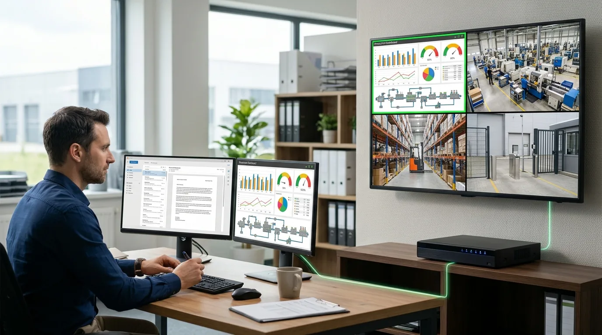
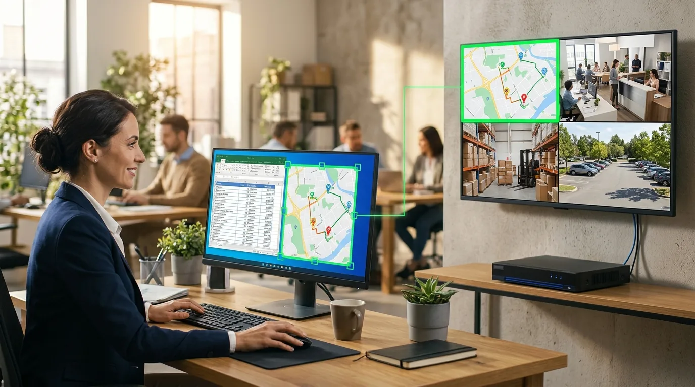
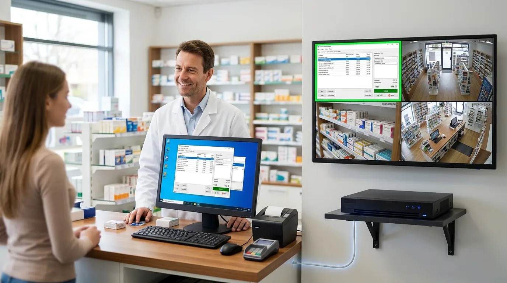
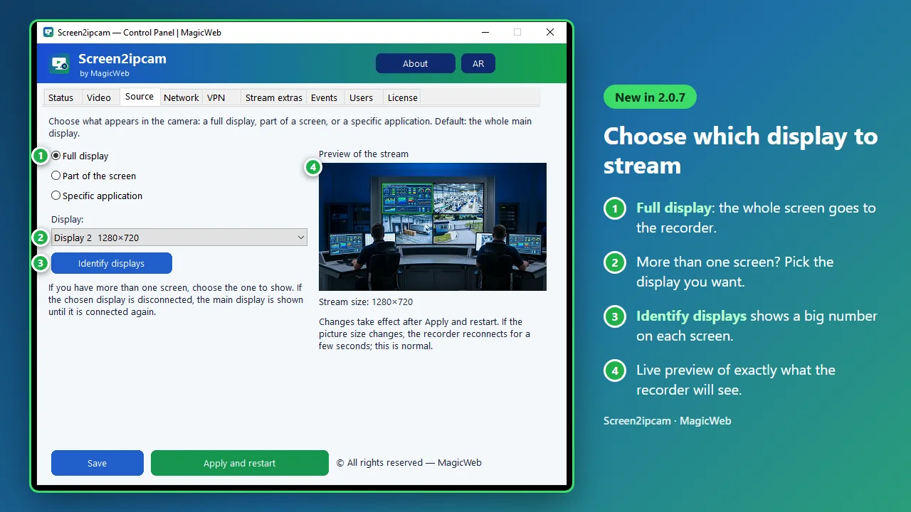
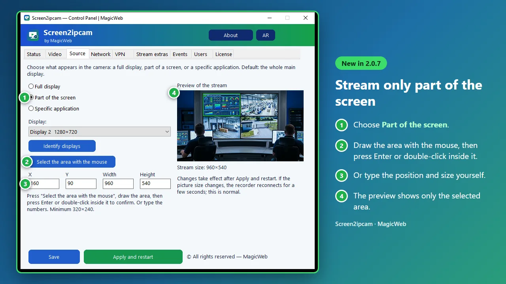
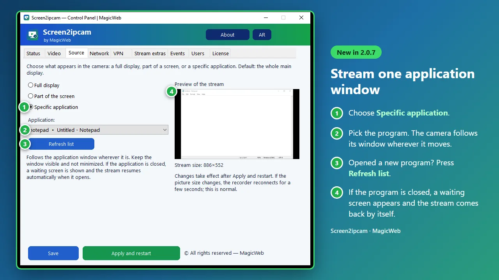
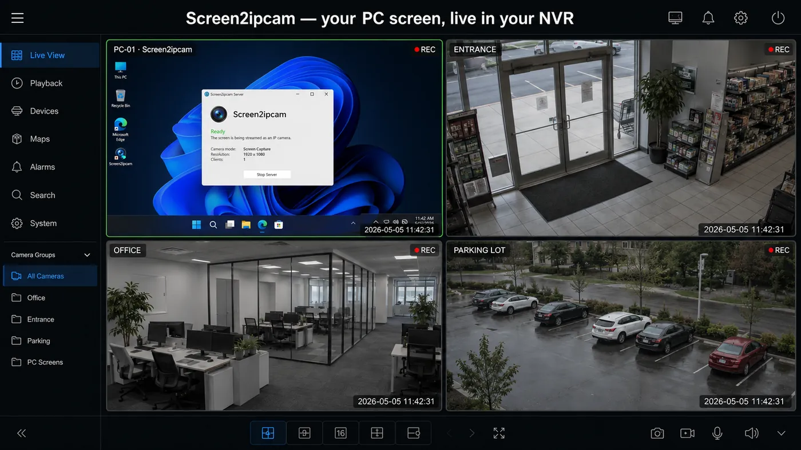
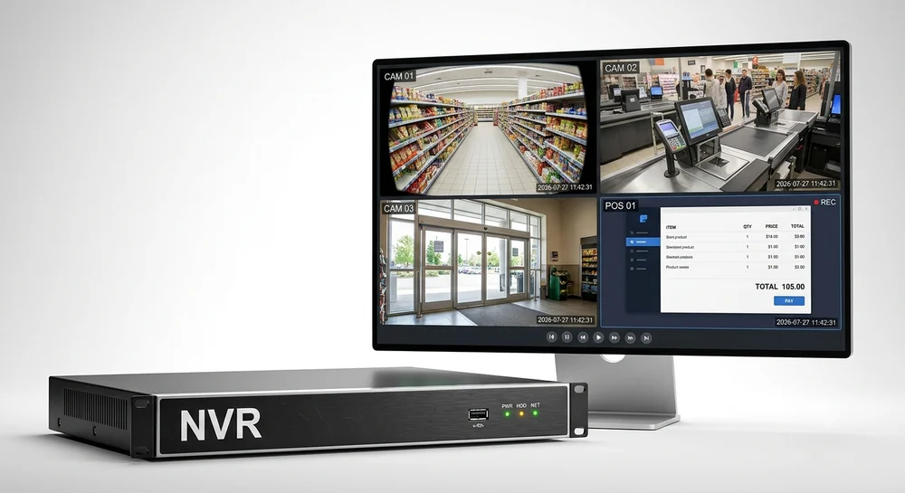
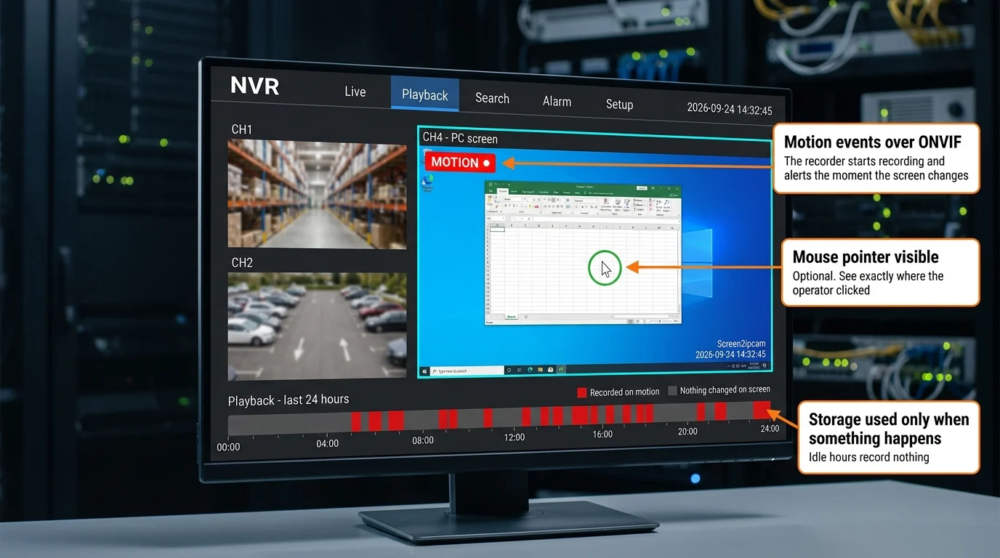

Full display
Stream the main display, or pick any other monitor. Identify displays shows each monitor's number on screen.
Screen2ipcam publishes a PC screen as a standard network camera. Your NVR or VMS finds it, shows it live and records it next to your real cameras: cashier and POS screens, dashboards, machines and office PCs.
Official site: screen2ipcam.com · magicweb.win
Works with
The new Source tab decides what appears in the camera. Keep the whole screen, pick another monitor, cut out one area, or follow a single application.

Stream the main display, or pick any other monitor. Identify displays shows each monitor's number on screen.

Draw the area with the mouse, or type its position and size. The recorder sees only that part.

Choose a program and the camera follows its window on screen, even when you move it.
Real screenshots from 2.0.7. Changes take effect after Apply and restart.



Built for CCTV installers and the shops, offices and factories they look after.
Recorders find it with ONVIF auto-search (WS-Discovery) and add it like any network camera. No plugins, no vendor lock-in.
Full-quality H.264 main stream for recording and a 640-pixel sub stream for smooth multi-camera live view.
The recorder records and alerts only when the screen changes. A Send test event button confirms it in one click.
Optional G.711 audio, so the recorder keeps sound and video on one timeline.
Camera name and date / time drawn on the picture, plus an optional mouse pointer in the stream and snapshots.
Status, settings, live preview and the list of connected viewers, from any browser on port 8080.
Pick the exact address the camera announces. VPN and virtual adapters are skipped automatically, and a network check confirms the recorder can reach it.
Streams on the logon screen with nobody signed in, fixed ports, Remote Desktop aware, silent install with a settings file.
No .NET, no runtimes, no drivers, no capture card. Windows 7 SP1 to 11, 32 and 64-bit.
No cloud account and offline license activation. Works on closed networks with no internet access.
Recorders and apps can ask for a still image over ONVIF, taken from the same source as the stream.
Keep the stream open for the recorder on your LAN, or require the login on the RTSP stream too.
No cabling, no capture card and no cloud account. The PC joins your camera system over the local network.

Run the installer on the Windows PC whose screen you want to record. The camera starts right away.
Keep the whole screen, or open the Source tab to pick a monitor, an area or one application.
Use ONVIF auto-search on the NVR or VMS, or add it by IP with ONVIF port 8000 and the login admin / admin.
Record continuously or on motion, keep it with your retention rules, and watch it live from the NVR app anywhere.
| ONVIF service | port 8000 (Windows Server edition: 18000) |
| RTSP main stream | rtsp://PC-IP:554/screenlive |
| RTSP sub stream | rtsp://PC-IP:554/screensub (640 px) |
| WS-Discovery | UDP 3702 |
| Web panel | http://PC-IP:8080 (Windows Server edition: 13030) |
| Default login | admin / admin (change it in the web panel) |
Short demos and full setup guides from the Screen2ipcam channel.
Filmed in a real store: the POS screen is just one more channel on the recorder, next to the cameras over the counter. Nothing to change in the store's CCTV system.
The full setup guide is at the top of this page.
Integration guides · Nx Witness
A camera sees the cashier, but not what is on the screen. Put both on the same timeline.

See every transaction on the screen at the same moment as the camera over the counter.

Motion events over ONVIF fill the timeline only where the screen changed, so search is fast and the disk lasts longer.
It works with anything that supports ONVIF Profile S or plain RTSP H.264. Here is the short path for three popular systems.
8000 and the login.8000 and the login.8000, RTSP 554 and the login.The same steps work for Uniview, XMEye, Milestone, Synology Surveillance Station, Agent DVR, Frigate and more. For Nx Witness, see the integration videos. For motion recording, turn on motion detection for the channel on the recorder.
A screen recorder saves files on the same PC. Screen2ipcam makes the screen one more camera in the system you already trust.
| Capability | Typical screen recorder | Screen2ipcam |
|---|---|---|
| Appears as an ONVIF Profile S camera | No | Yes |
| RTSP H.264 main and sub streams | No | Yes |
| Found by NVR / VMS auto-search | No | Yes, WS-Discovery |
| Recorded on the CCTV timeline | No | Yes |
| One monitor, one area or one app | Varies | Yes, Source tab |
| Records only when the screen changes | Varies | Yes, ONVIF motion events |
| Retention and remote viewing | Local files | Handled by the NVR |
| Streams on the logon screen | No | Yes, Windows Server edition |
| Needs .NET or extra runtimes | Varies | No, native C++ |
For servers, POS terminals and shared PCs. The service runs the camera on the logon screen itself, so after a reboot or a sign-out the recorder still sees the screen.
Screen2ipcam_Setup_2.0.5_WindowsServer_x64.exe /SILENT /SUPPRESSMSGBOXES
Yes. Screen2ipcam publishes your Windows screen as a standard ONVIF Profile S device with RTSP H.264 streams. To an NVR or VMS it looks like an ordinary network camera, so it is found by ONVIF auto-search (WS-Discovery) and recorded exactly like a hardware camera.
Yes. Since version 2.0.7 the Source tab lets you choose what the camera shows: a full display (pick any monitor), part of a screen (draw the area with the mouse or type its position and size), or a specific application that the camera follows on screen. The default is the whole main display.
Any recorder that supports ONVIF Profile S or plain RTSP H.264. This includes Hikvision, Dahua, Uniview and XMEye recorders, Nx Witness, Blue Iris, Milestone, Synology Surveillance Station, Agent DVR / iSpy, Frigate, Shinobi and most other VMS platforms. VLC can also open the RTSP stream directly.
Yes. Since version 2.0.5 Screen2ipcam can send motion events over standard ONVIF, so the recorder records and alerts only when the screen changes, which saves disk space. It is optional and off by default. A Send test event button lets you confirm that the recorder reacts without touching the screen.
No. Screen2ipcam is a native C++ application with no .NET, Java or runtime requirements, no drivers and no capture card. Install it on the PC and it starts serving the camera on your local network.
Yes. The installer runs as a fully functional 14-day trial, so you can test it with your own recorder before you decide.
Windows 7 SP1, 8, 8.1, 10 and 11, in 32-bit and 64-bit editions. The Windows Server edition also runs on Windows Server 2016, 2019, 2022 and 2025.
By default: RTSP on port 554, ONVIF on port 8000, WS-Discovery on port 3702 and the built-in web panel on port 8080. The Windows Server edition uses fixed ports: RTSP 554, ONVIF 18000 and web panel 13030. Allow these ports through the Windows firewall on your LAN.
The main stream is rtsp://PC-IP:554/screenlive and the sub stream is rtsp://PC-IP:554/screensub (640 pixels wide). Most recorders pick both up automatically over ONVIF, so you only need these addresses for RTSP-only software such as VLC.
Use the Windows Server edition. Its service runs the camera on the logon screen itself, so after a reboot or a log off the recorder still sees the screen. It uses fixed ports, follows the active session over Remote Desktop, and can be installed silently on many machines with a settings file.
The default ONVIF and web panel login is admin / admin. Change it in the web panel (port 8080) before using Screen2ipcam on a shared network.
Open the VPN tab in the control panel and choose exactly which address the camera should announce. VPN and virtual adapters such as Tailscale, Hyper-V, VMware and VirtualBox are detected and skipped automatically, and a built-in network check confirms that the recorder can reach that address.
Yes. Screen2ipcam can stream the PC sound together with the video using standard G.711, so the recorder stores audio and video on one timeline. It is off by default and runs only while a viewer is connected.
No. The camera is served on your local network only, there is no cloud account, and the license is activated offline. It works on closed networks with no internet access.
Full features for 14 days. Windows 7 SP1 to 11, ONVIF Profile S and RTSP H.264.
Guides, release notes and support on screen2ipcam.com and magicweb.win